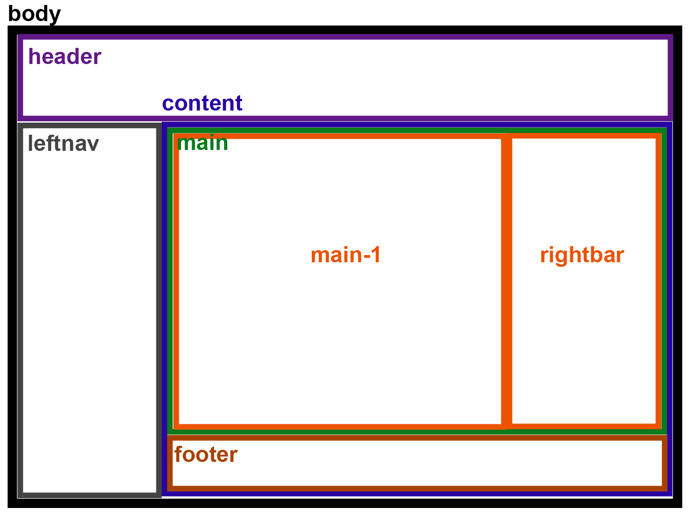

首頁版面配置
2017/7/31設定
- header, leftnav : position : fixed
- header高度, leftnav寬度, footer高度存成變數
- content上側跟左側設padding, 因為有設定 { box-sizing: border-box; }, 所以高度用100%
- main的高度用content高度減footer高度
- main-1, main-2用float來做2欄並排
小收穫:
- body的位置會被子層div的margin-top推到
- 使用float做排版時, 需明確給寬度否則無法達到並排的效果, 還要注意寬度若是剛好占滿(例如各50%), 還會被padding, margin影響到。不過padding可用 { box-sizing: border-box; } 來解決, margin則無法
- 父層div的長/寬若只有用min-/max-這種方式給, 則子層div的長寬想用父層的比例來給時, 似乎會沒有效果
